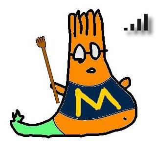
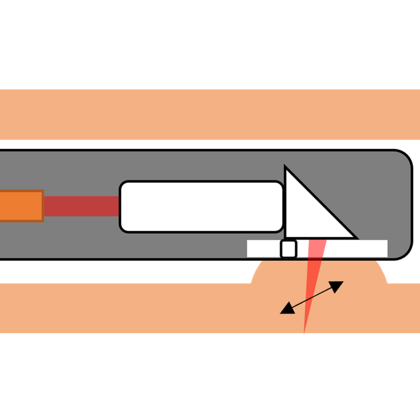
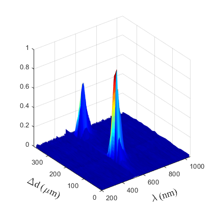
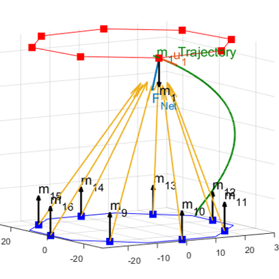
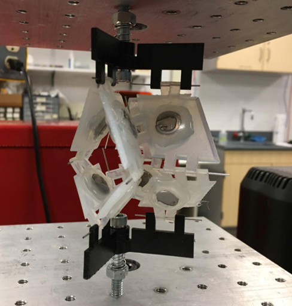

Tse-Shao Chang
tsechang at umich dot edu
AboutI am a Ph.D. candidate in Mechanical Engineering at the University of Michigan, Ann Arbor, specializing in Optical and Electro-optical Systems. My extensive experience lies in designing, developing, and characterizing imaging and sensor technologies. My specific research interest combines the development of miniature optical imaging systems for early cancer detection and staging with various optical imaging system, and signal and image detection & processing. My work aims to push the boundaries of current technologies and make significant advancements in the field. • Ph.D., Mechanical Engineering, University of Michigan, Ann Arbor, Advised by Dr. Thomas Wang • M.S.E., Mechanical Engineering, University of Michigan, Ann Arbor, 2018 • B.S., Mechanical Engineering, National Cheng Kung University, Tainan, Taiwan, 2014 |
PublicationsImaging Instruments |
 |
Wide-field
endoscope accessory for multiplexed
fluorescence imaging
Scientific Reports 2023 [PubMed] |
|  | Fiber-scanning
GRIN-lens-based photoacoustic endomicroscope for early colon cancer detection (Conference Presentation)
SPIE Photonics West, Photons Plus Ultrasound: Imaging and Sensing 2023 |
|  | Dual-axis
confocal configuration for depth sensitive
fluorescence spectroscopy
Optics Letters 2021
[PubMed] |
Cancer Imaging |
Near-Infrared
Imaging of Colonic Adenomas In Vivo Using Orthotopic
Human Organoids for Early Cancer Detection
Cancer 2023
[PubMed]
|
|
Multi-modal imaging for uptake of peptide
ligand specific for CD44 by hepatocellular carcinoma
Photoacoustics 2022
[PubMed] |
|
Multi-modal imaging probe for glypican-3
overexpressed in orthotopic hepatocellular carcinoma
Journal of medicinal chemistry 2021
[PubMed] |
|
Integrated imaging methodology detects
claudin-1 expression in premalignant nonpolypoid and
polypoid colonic epithelium in mice
Clinical and Translational Gastroenterology 2020
[PubMed] |
|
Detection of colonic neoplasia in vivo using
near-infrared-labeled peptide targeting cMet
Scientific Reports 2019
[PubMed] |
Clinical Trials |
 |
Flexible fiber cholangioscope for detection
near-infrared fluorescence
VideoGIE 2023
ClinicalTrials.gov | NCT04304781 | [PubMed]
|
Detection of Barrett’s Neoplasia with
Near-infrared Fluorescent Heterodimeric Peptide
Endoscopy 2022
ClinicalTrials.gov | NCT03852576 | [PubMed]
|
|
Confocal Laser Endomicroscope with Distal MEMS
Scanner for Real-Time Histopathology
Scientific Reports 2022
ClinicalTrials.gov | NCT03220711 | [PubMed]
|
|
Multiplexed endoscopic imaging of Barrett’s
neoplasia using targeted fluorescent heptapeptides in
a phase 1 proof-of-concept study
Gut 2021
ClinicalTrials.gov | NCT03589443 | [PubMed]
|
Origami |
|  | Magneto-origami structures: engineering
multi-stability and dynamics via magnetic-elastic
coupling
Smart Materials and Structures 2019
[IOPScience] |
|  | Controlling Origami Stability Profile Using
Magnets
IDETC/CIE 2018
[ASME] |